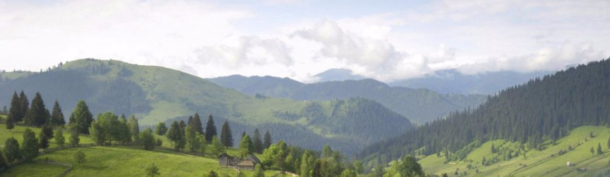

|  | ||||
|---|---|---|---|---|
| Главная | ||||
|
ГОРОДА УКРАИНЫ
|
Условия и особенности развития устойчивого природноориентированного туризмаРациональное использование природно-ресурсного потенциала требует задействования экономических инструментов обеспечения экологической политики на различных административных уровнях, включающих взимание платежей за природные ресурсы с предварительной оценкой их стоимости, оценку и компенсацию нанесенного ущерба. Например, для расчета размера ущерба, вызываемого уничтожением и повреждением растительности в городах, целесообразно их отношение к основным фондам по аналогии с многолетними насаждениями в сельскохозяйственном обороте (садоводстве, виноградарстве). К показателям стоимости ущерба применяются поправочные местные коэффициенты, позволяющие учесть экологическую значимость зеленых насаждений, фактическую обеспеченность ими населения. Могут учитываться другие аспекты ценности: возраст деревьев, видовой и породный состав. Для лесов и древесно-кустарниковой растительности важны затраты не только по посадке лесных культур и уходу за ними, но и связанные с лесной охраной, защитой лесов от вредителей, работ по лесоустройству, прокладке лесных дорог. Хозяйственная деятельность вызвала необходимость оценки и учета природных факторов. К природным ресурсам применимо понятие «природно-ресурсная рента» как часть доходов и прибыли, обусловленной их использованием. Проблема эффекта и затрат в природной ренте обусловлена тем, что природный ресурс сам по себе не создает продукта, необходимы капитал и труд. |
ПОПУЛЯРНОЕ НА САЙТЕ
|
|||||||||||||||||||||||||
|
В рекреационной сфере следует выделить три формы рекреационной ренты: монопольную, дифференциальную и абсолютную. Монопольная имеет место при использовании уникальных экзотических особенного качества ресурсов, на которые есть повышенный спрос, что может привести к сверхприбыли (обычно должна быть государственной или муниципальной собственностью). Основу дифференциальной ренты составляют особенности в качестве, доступности, пользе рекреационных ресурсов. Она возникает при эксплуатации рекреационных ресурсов местного значения и имеет отношение к местным органам самоуправления и субъектам хозяйственной деятельности. Так, например, удельная туристическая рента территории национальных парков Беларуси приведена в табл.1.
|
|||||||||||||||||||||||||||
 ВИННИЦА
ВИННИЦА
|
2016 © Владислав Твердохлеб |